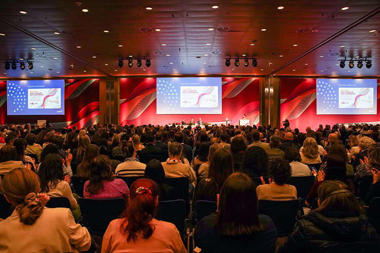
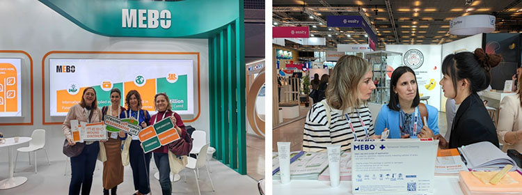
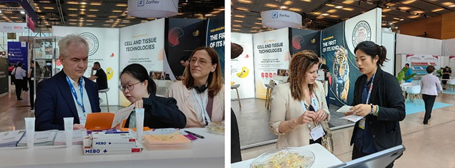
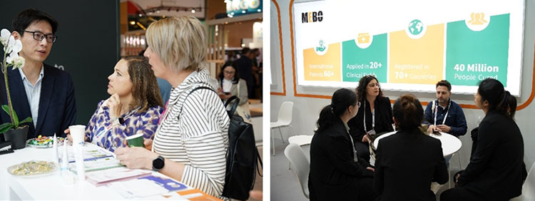

Del 26 al 28 de marzo se celebró la 35.ª Conferencia de la Asociación Europea de Manejo de Heridas (EWMA) en el Centro Internacional de Convenciones de Barcelona, bajo el lema 'Rompiendo fronteras y barreras: hacia un futuro excelente en el manejo de heridas'. La conferencia ofreció una plataforma a casi 6.000 expertos en heridas de más de 90 países, fomentando la colaboración multidisciplinar y ampliando los enfoques del tratamiento de heridas.

En la ceremonia de apertura, la Presidenta de la EWMA, Kirsi Isoherranen, agradeció a los socios académicos y comerciales y presentó varios proyectos académicos en curso. La conferencia contó con más de 800 ponencias de alta calidad que mostraron los logros de vanguardia del campo, y atrajo como expositores a cerca de 200 destacadas empresas farmacéuticas.

Invitada por octavo año consecutivo, MEBO International presentó una vez más sus productos principales —entre ellos la Pomada para Quemaduras de Exposición Húmeda MEBO, aplicada en todo el mundo, y apósitos para heridas— junto con los últimos protocolos de tratamiento clínico. Las ventajas únicas de la tecnología médica regenerativa en el tratamiento de heridas atrajeron un flujo constante de asistentes al stand para debatir y compartir experiencias de tratamiento.
Más allá de la exposición, la tecnología médica regenerativa protagonizó olas académicas durante toda la conferencia. En la tarde del primer día se celebró con éxito el simposio 'Reinventando el tratamiento de heridas: de la práctica clínica a la innovación tecnológica', una actividad clave del compromiso de la Clinton Global Initiative 'Mending Europe: Empowering the Establishment of a Regeneration Network'. Ziad Dalloul, del grupo médico saudí Sulaiman Al Habib, compartió estrategias de manejo clínico de la úlcera de Marjolin; Zhou Xiaoqian, del Noveno Hospital de Xi'an, presentó el trasplante de suspensión de micropartículas de piel de desarrollo propio combinado con tecnología médica regenerativa para heridas crónicas; y Nikki Valencia, del Quirino Memorial Medical Center de Filipinas, compartió una reciente revisión sistemática que confirma de forma integral la eficacia, seguridad, alivio del dolor y prevención de infecciones de la tecnología en el tratamiento de quemaduras.

El simposio acogió también una parada de la gira global de la Acción Vida Regenerativa, la primera en Europa. Desde 2015, la Acción ha desarrollado diversos programas de formación técnica, ayuda ante desastres, tratamiento de quemaduras y salud de mujeres y niños. Al día siguiente, Liu Yuedong, de la Universidad de Medicina Tradicional China de Liaoning; Lee Chin Yen, del Hospital Ampang de Malasia; y Zhou Xiaoqian ofrecieron ponencias sobre manejo posoperatorio anorrectal, úlceras por pioderma gangrenoso y quemaduras, respectivamente.

La EWMA es uno de los eventos académicos más influyentes de Europa, con un impacto global creciente en el campo de las heridas. La próxima conferencia se celebrará en Bremen (Alemania) en mayo de 2026.